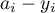

Perceptrons
Table of Contents
1 Old Business
- Hodgkin - Huxley
- Sign up Sheet signup.txt
2 Overview
2.1 Question:
What component of the domain of linear algebra is most like a neural network and why?
2.2 Answer:
I would say a matrix.
2.3 Vectors are
- Strings of numbers . What does the "T" mean?
- Geometric elements with direction and magnitude.
import matplotlib.pyplot as p ax = p.axes() ax.set_xlim([0,6]) ax.set_ylim([0,6]) ax.arrow(0,0,5,5, lw = 4, head_width = 1.0, head_length=1.0, fc ='k', ec = 'k') p.savefig('vectorExample.png') return 'vectorExample.png'
2.4 Neural Networks are Vector Transformations
2.4.1 Perceptron - brief history
2.5 Hand Worked Example
Perceptron
Threshold value is "0".
Preliminaries:
- What does
Irefer to in the first equation? - What do
xandyrefer to? - What are the
w's and why are they bold? - What is ?
- What happens to the weights under the circumstances where the answer is correct and incorrect?
- Is this a supervised or unsupervised learning algorithm, and what is the difference?
- How does this affect the biolgical plausibility of this neural network?
2.6 Do some computations by hand
or a spreadsheet or some simple code, and plot the migration of the weight vector. What relationship does the weight vector bear to the decision of correct and incorrect and why does that relation exist?
| Input1 | Input2 | Class Name | Class Value |
|---|---|---|---|
| 0.3 | 0.7 | A | 1 |
| 0.7 | 0.3 | A | 1 |
| -0.6 | 0.3 | B | -1 |
| -0.2 | -0.8 | B | -1 |
First, see how well the current weights classify the data, then compute and update the weights for each of the inputs (in the order specified) and see how the weight vector moves.
import matplotlib.pyplot as p import numpy as np from itertools import cycle ds = np.array([[0.3,0.7],[0.7,0.3],[-0.6,0.3],[-0.2,-0.8]]) w = np.array([-0.6,0.8]) ax = p.axes() ax.set_aspect('equal') ax.set_xlim(-2.5,2.5) ax.set_ylim(-2.5,2.5) cls = cycle('rrgg') for d,c in zip (ds,[1,1,-1,-1]): pltwt = np.sqrt(np.dot(w,w)) ax.arrow(0,0,w[0],w[1], lw = pltwt*3, head_width = 0.2*pltwt, head_length=0.05*pltwt, fc ='k', ec = 'k') nudge = 0.2 p.scatter(d[0],d[1],color = next(cls)) p.text(d[0]+nudge,d[1]+nudge,str(w)) y = 1 if (np.dot(d,w) >= 0.0) else -1 beta = 1 if y == c else -1 w = w + beta*y*d ax.arrow(0,0,w[0],w[1], lw = pltwt*3, head_width = 0.2*pltwt, head_length=0.05*pltwt, fc ='k', ec = 'k') p.savefig('perceptronExample.png') return 'perceptronExample.png'
Figure 2: Perceptron Example - Weight Vectors
2.7 Bias
What happens when the line that is needed to separate the points does not go through the origin, as for example any of the logical functions we studied last time (AND,NAND,OR)?
How could we reconcieve our input vector in order to learn the bias?
where is the y-intercept? What is the y-intercept? How do I need to move the line to function to separate the two classes? Now how do I rewrite that in terms of the matrix and vector operations we have been learning so that I can learn the bias just like I learn the weights?
Where x2 is fixed at 1. Then can visualize as .
2.8 What do these things have in common?
Group Exercise: find one general equation for your "term" that relates to how the updating takes place.
- Reinforcement Learning
- Rescorla - Wagner
- Newton's Method
- Delta Rule
2.9 Deriving the Delta Rule
We have an ouput and a "right" answer, and we want to minimize the difference. We can call the answers as 's and use the subscripts to indicate one of our inputs and known outputs.
 where . We don't just want to make the answer small for one input-output pair, but for all of them. So, let's add up the errors.
What is wrong with this formulation? Well, positive and negative errors can cancel out, and we can have a small number with everything being individually far from zero. A common trick is to make everything positive by squaring it. One reason for not taking absolute values is that squaring makes it easier to take derivatives and the like.
 The one-half value is just for convenience. To find where the value reaches a minimum we take a derivative (a graphical explanation can show why - if you don't see it, ask me, but remember to think of the derivative of the slope of a function at each point. What happens to the slope when you reach a peak or a dip?). What should we take the derivative with respect to? What is it that we are free to change?
The one-half value is just for convenience. To find where the value reaches a minimum we take a derivative (a graphical explanation can show why - if you don't see it, ask me, but remember to think of the derivative of the slope of a function at each point. What happens to the slope when you reach a peak or a dip?). What should we take the derivative with respect to? What is it that we are free to change?
A derivative of a sum is a sum of derivatives so, we need to,
The goes over each of the individual weights, as we usually have a vector (or matrix of weights).
If you compare this to the derivation in wikipedia you will see a difference due to their more general assumptions about the activation function used to produce which assumes that and I have simplified things by assuming that g is simply the identity.
3 Some Tools
- Octave/Matlab - programming languages for manipulating matrices and vectors. Common in engineering.
R
a = matrix(data = c(1,2,3,4),nrow=2,ncol=2) print(a) b = matrix(data = c(5,6), nrow = 2) print(b) a %*% bNote that matrix multiplication has a different symbol and meaning from plain multiplication.
[,1] [,2] [1,] 1 3 [2,] 2 4 [,1] [1,] 5 [2,] 6 [,1] [1,] 23 [2,] 34A summary of some of the R functions can be found here.
Python Probably want to use the numpy or scipy functions. We will use numpy here.
import numpy as np myvec = np.array([5,6]) print myvec mymat = np.array([[1,2],[3,4]]) print mymat print np.dot(mymat,myvec)
Now think about it: why is this answer different from the example above?
[5 6] [[1 2] [3 4]] [17 39]
4 Assignments
- In a spreadsheet (or as code) write out a multi-layer perceptron network that will computer the XOR function. You do not need to "learn" the weights for this network. You know who to represent the XOR in terms of a network of simple logical operations, and you should be able to deduce a set of weights for each of those operations that you can encode into your network (or spreadsheet) that will let me enter each pair of the XOR inputs (0,1) and get the correct output: 1 for True, and 0 or -1 for False.
- Simulation and training with the delta rule. The problem is on pages 91-92 of the text book in gray. There is Octave code demonstrating how to solve the problem, but as we all know it is one thing to read a solution, another to program it ourselves. The problem is described in the test, but one thing that people seem to misunderstand is that you are training a single weight vector for all patterns. Not a weight vector for each pattern.